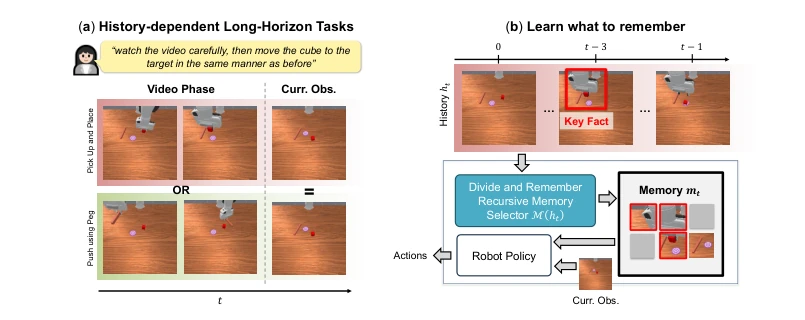
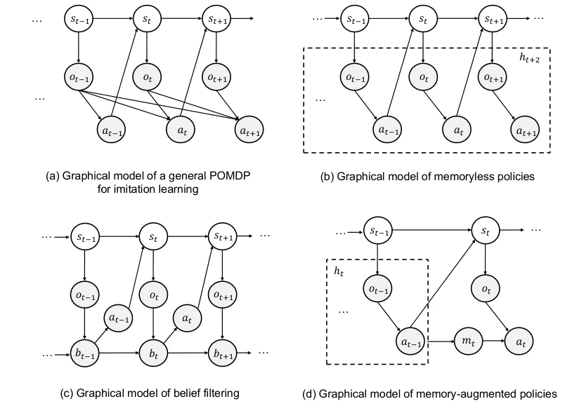
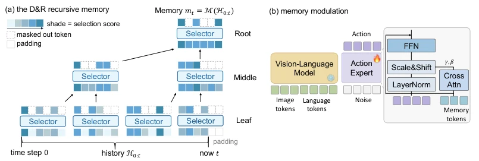
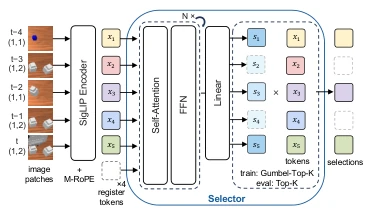
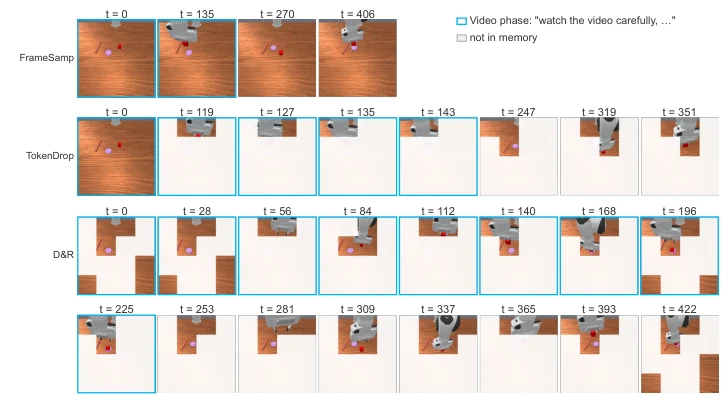
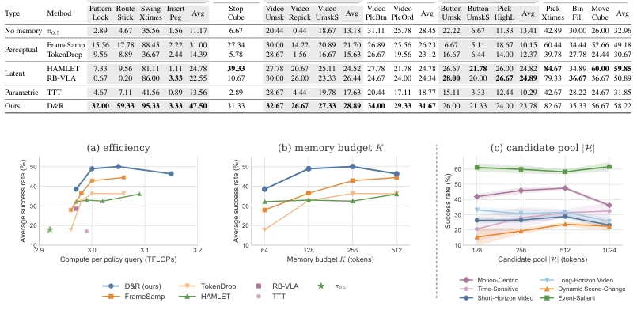
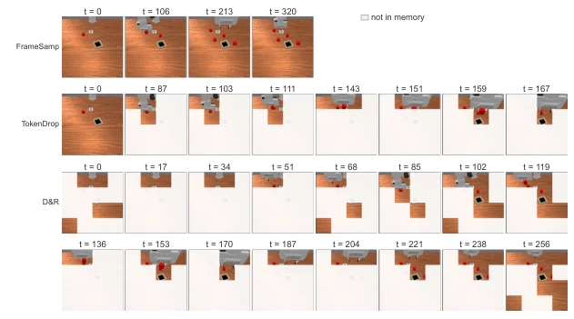
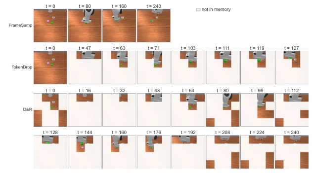
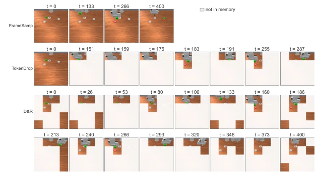
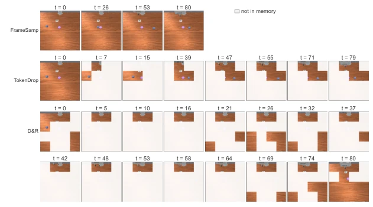

<!DOCTYPE html><html lang="zh"><head><meta charset="utf-8">
<meta name="viewport" content="width=device-width,initial-scale=1">
<title>Divide-and-Remember: Recursive Action-Relevant Memory for Long-Horizon VLA Policies</title><style>
body{font:16px/1.7 -apple-system,Segoe UI,Roboto,'Noto Sans CJK SC',sans-serif;
 max-width:860px;margin:0 auto;padding:32px 20px;color:#1a1a1a;background:#fafafa}
h1{font-size:24px;line-height:1.3} h2{font-size:19px;border-left:4px solid #6c8cff;
 padding-left:10px;margin-top:34px;color:#27408b}
.meta{color:#666;font-size:13px;margin-bottom:8px}
.meta a{color:#6c8cff;text-decoration:none;margin-right:10px}
figure{margin:16px 0;text-align:center}
figure img{max-width:100%;border:1px solid #e0e0e0;border-radius:6px;background:#fff}
figcaption{font-size:12px;color:#777;margin-top:6px}
.badge{background:#ffb454;color:#000;font-size:11px;font-weight:700;padding:2px 8px;border-radius:4px}
.back{font-size:13px}
.en{display:none}
.lang-en .zh{display:none}
.lang-en .en{display:revert}
.langbtn{position:fixed;top:12px;right:12px;background:#27408b;color:#fff;border:0;
 border-radius:6px;padding:6px 12px;cursor:pointer;font:inherit;z-index:10}
.catgrid{display:grid;grid-template-columns:repeat(auto-fill,minmax(155px,1fr));gap:10px;margin:12px 0}
.catblock{display:flex;flex-direction:column;align-items:center;justify-content:center;gap:8px;
 min-height:72px;padding:12px;background:#e3e7ef;border:2px solid #6c8cff;
 border-radius:10px;color:#1a2030;text-decoration:none;text-align:center;font-size:13px;font-weight:600;
 transition:background .15s}
.catblock:hover{background:#bcc4d6}
.catblock .cnt{color:#2f6bff;font-size:14px;font-weight:800}
</style></head><body>
<button class="langbtn" id="langbtn" onclick="toggleLang()">EN</button><script>function toggleLang(){var en=document.documentElement.classList.toggle('lang-en');try{localStorage.setItem('rd_lang',en?'en':'zh')}catch(e){}document.getElementById('langbtn').textContent=en?'中文':'EN'}(function(){try{if(localStorage.getItem('rd_lang')==='en')document.documentElement.classList.add('lang-en')}catch(e){}var b=document.getElementById('langbtn');if(b)b.textContent=document.documentElement.classList.contains('lang-en')?'中文':'EN'})();</script>
<p class="back"><a href="../index.html" onclick="if(history.length>1){history.back();return false}"><span class="zh">← 返回</span><span class="en">← Back</span></a></p>
<h1>Divide-and-Remember: Recursive Action-Relevant Memory for Long-Horizon VLA Policies</h1>
<p class="meta">Xuehui Yu, Eason Yu, Meiyi Wang, Haozhe Du, Stefano V. Albrecht, Harold Soh<br>
<a href="http://arxiv.org/abs/2610.00982v1">abs</a><a href="https://arxiv.org/pdf/2610.00982v1">pdf</a></p>
<h2><span class="zh">论文点评</span><span class="en">Review</span></h2><div class="zh">这篇论文给VLA模型装上了“递归记忆”，试图解决长程任务中“记性差”的顽疾。作者把“记什么”从玄学变成了优化问题，用条件互信息I(at; mt | ot)作为金标准，这理论底子确实扎实，比那些拍脑袋选关键帧的“感知记忆”要硬核得多。Divide-and-Remember (D&amp;R) 的递归选择机制很巧妙，用固定大小的轻量级选择器处理无限长的历史，既省显存又高效，在RoboMME基准上确实刷出了SOTA，尤其是长视频任务上吊打基线。不过，别高兴太早，论文也承认在“状态类”事实（如计数、动态变化）上，D&amp;R和那些压缩更狠的潜在记忆（如HAMLET）打了个平手，甚至有时不如。毕竟，直接存原始token虽然保真，但容量有限，遇到需要高度抽象的连续状态，还是得靠压缩。此外，训练步数不够导致大预算下性能反而下降，说明收敛性还得打磨。总的来说，这是一次理论驱动工程落地的漂亮尝试，但离“全能记忆”还有距离。</div><div class="en">This paper equips VLA models with &quot;recursive memory&quot;, attempting to solve the chronic problem of &quot;poor memory&quot; in long-horizon tasks. The authors transformed &quot;what to remember&quot; from metaphysics into an optimization problem, using conditional mutual information I(a_t; m_t | o_t) as the gold standard; this theoretical foundation is indeed solid, much more rigorous than &quot;perceptual memory&quot; that picks keyframes on a whim. The recursive selection mechanism of Divide-and-Remember (D&amp;R) is quite clever, using a fixed-size lightweight selector to handle infinitely long history, saving VRAM and being efficient, indeed achieving SOTA on the RoboMME benchmark, especially significantly outperforming baselines on long-video tasks. However, do not be too quick to celebrate; the paper also admits that on &quot;state-like&quot; facts (such as counting, dynamic changes), D&amp;R ties with those more aggressively compressed latent memories (like HAMLET), and sometimes even underperforms. After all, storing raw tokens directly ensures fidelity but has limited capacity; when encountering highly abstract continuous states, compression is still necessary. Additionally, insufficient training steps lead to performance degradation under large budgets, indicating that convergence still needs refinement. Overall, this is an impressive attempt at theory-driven engineering implementation, but still far from &quot;omnipotent memory&quot;.</div><h2><span class="zh">研究动机</span><span class="en">Motivation</span></h2><div class="zh">Vision-Language-Action (VLA) 模型在处理长程、部分可观测的机器人操作任务时，常因当前观测无法确定动作而失效，这就是所谓的“记忆问题”。现有方法主要分为三类：潜在记忆（如HAMLET [Koo et al., 2026]）将历史压缩为隐向量，虽能追踪时间事实但丢失空间细节；感知记忆（如TokenDrop [Dai et al., 2026]）基于启发式规则（如像素变化）选择帧，虽保留空间信息但未必与动作相关；参数记忆（如TTT [Sun et al., 2025]）则依赖测试时训练，速度慢且难以精确读取。这些方法大多基于任务特定的归纳偏置设计“记什么”，导致在不同任务上表现不一致，缺乏统一的最优理论指导。本文指出，现有启发式方法（如最大化像素差异）只是条件互信息的松散上界，可能浪费预算在无关信息（如光照变化）上。因此，核心动机是：能否在VLA预训练的token空间内，直接优化条件互信息I(at; mt | ot)，让记忆成为动作的充分统计量，既保留空间细节又精准服务于控制？</div><div class="en">Vision-Language-Action (VLA) models often fail when handling long-horizon, partially observable robotic manipulation tasks because current observations cannot determine actions; this is the so-called &quot;memory problem&quot;. Existing methods are mainly divided into three categories: latent memory (e.g., HAMLET [Koo et al., 2026]) compresses history into latent vectors; although it can track temporal facts, it loses spatial details; perceptual memory (e.g., TokenDrop [Dai et al., 2026]) selects frames based on heuristic rules (e.g., pixel changes); although it retains spatial information, it may not be related to actions; parameter memory (e.g., TTT [Sun et al., 2025]) relies on test-time training, which is slow and difficult to read precisely. Most of these methods design &quot;what to remember&quot; based on task-specific inductive biases, leading to inconsistent performance across different tasks and lacking unified optimal theoretical guidance. This paper points out that existing heuristic methods (e.g., maximizing pixel differences) are merely loose upper bounds of conditional mutual information and may waste budget on irrelevant information (e.g., lighting changes). Therefore, the core motivation is: Can we directly optimize conditional mutual information I(a_t; m_t | o_t) within the VLA pre-trained token space, making memory a sufficient statistic for actions, retaining spatial details while precisely serving control?</div><figure><figcaption>Figure 1: Memory is a question of what to remember. (a) A history-dependent task: “watch the video carefully, then move the cube to the target in the same manner as before”. Two videos show different manners (pick-and-place versus peg push), yet at time step t the robot sees the same observation. A memoryless policy cannot recall how the cube was moved. (b) We view memory as an optimisation problem: find the memory mt = M(ht), selected from the full history, that carries the key fact the current observation lacks (here, the grasp pose at t −3), so that the policy knows how to move the cube.</figcaption></figure>
<figure><figcaption>Figure 7: Graphical models of imitation learning in a POMDP. (a) A general policy for the POMDP inputs the current observation and the full history, at ∼π(· | ot, ht), but the history grows without bound. (b) A memoryless policy at ∼π(· | ot) inputs only the current observation, which causes the memory problem in Figure 1(a). (c) A belief policy at ∼π(· | bt) inputs the belief bt(s) = P(st = s | ht, ot), the posterior over the current state and a sufficient statistic of the history. (d) A memory-augmented policy at ∼π(· | ot, mt) inputs a memory mt = M(ht) and the current observation. Here mt need only be sufficient to reproduce the expert’s action (Proposition 1), and the optimal memory carries the most action-relevant information I  at; mt | ot  . Shaded circles are observed in the dem</figcaption></figure><h2><span class="zh">方法</span><span class="en">Method</span></h2><div class="zh">Divide-and-Remember (D&amp;R) 的核心是将记忆选择建模为离散优化问题，目标是在预训练token空间内最大化I(at; mt | ot)。整体流程分为递归选择与策略训练两部分。首先，针对历史长度无限增长的问题，D&amp;R采用递归分治策略：将全历史划分为2K个token的切片，使用一个共享的轻量级选择器fψ在每个切片中选出Top-K个关键token。随后，相邻切片选出的K个token合并为新的2K切片，再次进行Top-K选择，如此层层向上递归，直到根节点输出最终的记忆mt。这种设计使得无论历史多长，只需一个固定大小的选择器即可处理，且训练与部署构建相同的树结构，消除了离线-在线不匹配。其次，选择器fψ基于冻结的SigLIP编码器和Transformer架构，利用M-RoPE保留时空结构，通过Gumbel-Top-K技巧进行端到端训练。训练信号直接来自策略的动作损失（流匹配损失），即I(at; mt | ot)的变分下界，无需额外的辅助损失或人工规则。最后，选出的记忆token通过自适应LayerNorm调制到动作专家中，与当前观测共同决定动作。</div><div class="en">The core of Divide-and-Remember (D&amp;R) is modeling memory selection as a discrete optimization problem, aiming to maximize I(a_t; m_t | o_t) within the pre-trained token space. The overall process is divided into two parts: recursive selection and policy training. First, addressing the problem of infinite growth in history length, D&amp;R adopts a recursive divide-and-conquer strategy: dividing the full history into slices of 2K tokens, using a shared lightweight selector f_ψ to select Top-K key tokens in each slice. Subsequently, the K tokens selected from adjacent slices are merged into new 2K slices, performing Top-K selection again, recursively upward layer by layer, until the root node outputs the final memory m_t. This design ensures that regardless of history length, only a fixed-size selector is needed to handle it, and training and deployment build the same tree structure, eliminating offline-online mismatch. Second, the selector f_ψ is based on a frozen SigLIP encoder and Transformer architecture, utilizing M-RoPE to retain spatiotemporal structure, and trained end-to-end via the Gumbel-Top-K trick. The training signal comes directly from the policy&#x27;s action loss (flow matching loss), which is the variational lower bound of I(a_t; m_t | o_t), requiring no additional auxiliary losses or manual rules. Finally, the selected memory tokens are modulated into the action expert via adaptive LayerNorm, jointly determining the action with the current observation.</div><figure><figcaption>Figure 3: Overview of D&amp;R. (a) At time step t, the selection over the full history Ht is divided re- cursively into subproblems of top-K selection over 2K tokens, each solved by the same lightweight selector fψ; the kept tokens are merged pairwise and re-selected level by level, and at the root the selected tokens are passed to the policy through the attention mask. Tokens keep their temporal or- der from left to right at every level. (b) D&amp;R and all baselines modulate the memory into the action expert through an adaptive LayerNorm, where action features cross-attend to the memory tokens.</figcaption></figure>
<figure><figcaption>Figure 4: The selector fψ.</figcaption></figure>
<figure><figcaption>Figure 5: Memory at step 422 of a MoveCube episode under a 64-token budget, with the task goal “watch the video carefully, then move the cube to the target in the same manner as before”. FrameSamp keeps 4 evenly spaced frames. TokenDrop keeps the first frame and spends the rest of the budget on the patches whose pixels changed most. D&amp;R selects 64 patches recursively, 35 of them from the video phase. Kept patches are shown, white ones are not in memory, and light blue borders mark the video phase. All tasks are in Appendix B.3.3.</figcaption></figure><h2><span class="zh">实验</span><span class="en">Experiments</span></h2><div class="zh">实验在RoboMME基准（16个长程操作任务）和真实机器人上进行。基线包括感知记忆（FrameSamp, TokenDrop）、潜在记忆（HAMLET, RB-VLA）和参数记忆（TTT），均基于π0.5骨干网络。评测指标为成功率，记忆预算固定为64 token。结果显示，D&amp;R在平均成功率上达到38.6%，显著优于HAMLET (32.2%) 和FrameSamp (27.9%)，尤其在长视频和运动中心任务上优势明显（如MoveCube任务中成功召回300步前的抓取姿态）。在真实机器人实验中，D&amp;R在4个长程任务上达到35/40的成功率，远超FrameSamp (22/40) 和无记忆策略 (3/40)。消融实验表明，D&amp;R在“帧类”事实（需高保真空间信息）上表现最佳，但在“状态类”事实（如计数）上与潜在记忆持平；增大候选池对状态类任务有益，但过大可能稀释关键帧；增加预测损失并未带来提升，说明单纯的动作优化已足够。</div><div class="en">Experiments were conducted on the RoboMME benchmark (16 long-horizon manipulation tasks) and real robots. Baselines include perceptual memory (FrameSamp, TokenDrop), latent memory (HAMLET, RB-VLA), and parameter memory (TTT), all based on the π0.5 backbone network. The evaluation metric is success rate, with memory budget fixed at 64 tokens. Results show that D&amp;R achieves an average success rate of 38.6%, significantly outperforming HAMLET (32.2%) and FrameSamp (27.9%), with obvious advantages especially in long-video and motion-centric tasks (e.g., successfully recalling grasp poses 300 steps prior in the MoveCube task). In real robot experiments, D&amp;R achieved a success rate of 35/40 on 4 long-horizon tasks, far exceeding FrameSamp (22/40) and memoryless strategies (3/40). Ablation studies show that D&amp;R performs best on &quot;frame-like&quot; facts (requiring high-fidelity spatial information), but ties with latent memory on &quot;state-like&quot; facts (such as counting); increasing the candidate pool is beneficial for state-like tasks, but too large may dilute keyframes; adding prediction loss did not bring improvement, indicating that pure action optimization is sufficient.</div><figure><figcaption>Figure 6: (a) Average success rate against the TFLOPs of one policy forward pass; each line sweeps the memory budget K from 64 to 512 (Table 8). (b) Average success rates against K. (c) D&amp;R per task characteristic (Dai et al., 2026) as the candidate pool |H| grows from 128 to 1024 tokens at K = 64; mean ± std over runs (Table 5).</figcaption></figure>
<figure><figcaption>Figure 9: BinFill (Counting): “put one red cube into the bin, then press the button to stop”.</figcaption></figure>
<figure><figcaption>Figure 10: PickXtimes (Counting): “pick up the green cube and place it on the target, then press the button to stop”.</figcaption></figure>
<figure><figcaption>Figure 11: SwingXtimes (Counting): “pick up the green cube, move it to the top of the right-side target, then move it to the top of the left-side target, repeating this back-and-forth motion two times, finally press the button to stop”.</figcaption></figure>
<figure><figcaption>Figure 12: StopCube (Counting): “press the button to stop the cube just as it reaches the target for the fourth time”.</figcaption></figure>
</body></html>